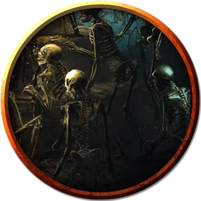

Скелет джаггернаут
Skeletal Juggernaut
Большая Нежить, законно-злая

Класс Доспеха 13 (обломки доспеха)
Хиты 142 (19к10 + 38)
Скорость 30 футов
| мод | спас | ||
|---|---|---|---|
| СИЛ | 16 | +3 | +3 |
| ЛОВ | 14 | +2 | +2 |
| ТЕЛ | 15 | +2 | +2 |
| мод | спас | ||
|---|---|---|---|
| ИНТ | 6 | −2 | −2 |
| МДР | 8 | −1 | −1 |
| ХАР | 5 | −3 | −3 |
Уязвимость к урону дробящий
Иммунитет к урону яд
Иммунитет к состояниям истощение, отравление
Чувства тёмное зрение 60 футов, пассивное Восприятие 9
Опасность 5 (1800 опыта)
Бонус мастерства +3
Особенности
Разбираемый. Если хиты джаггернаута уменьшаются до 0, из его останков вырастают двенадцать скелетов [skeleton].
Разваливающийся на части. Если хиты джаггернаут ниже максимума в начале его хода, то он теряет 10 хитов.
Действия
Мультиатака. Джаггернаут совершает две атаки Когтями.
Когти. Рукопашная атака оружием: +6 к попаданию, досягаемость 10 футов. одна цель. Попадание: 12 (2к8 + 3) рубящего урона.
Костяная лавина (Перезарядка 5-6). Джаггернаут разрушается в большую массу, прежде чем быстро восстановиться. Каждое существо в пределах 10 футов от джаггернаута должно совершить спасбросок Ловкости Сл 14, получая 18 (4к8) дробящего урона при провале или половину этого урона при успехе. Существо, которое проваливает этот спасбросок, также падает ничком.
Описание
Известный, неуклюже идущий по побережью острова Аббатства, скелет джаггернаута представляет собой огромное двуногое скопление костей, которое с каждым шагом теряет часть своей массы. Эти скелетообразные стражи держатся вместе лишь короткое время, прежде чем распасться на группу отдельной нежити.